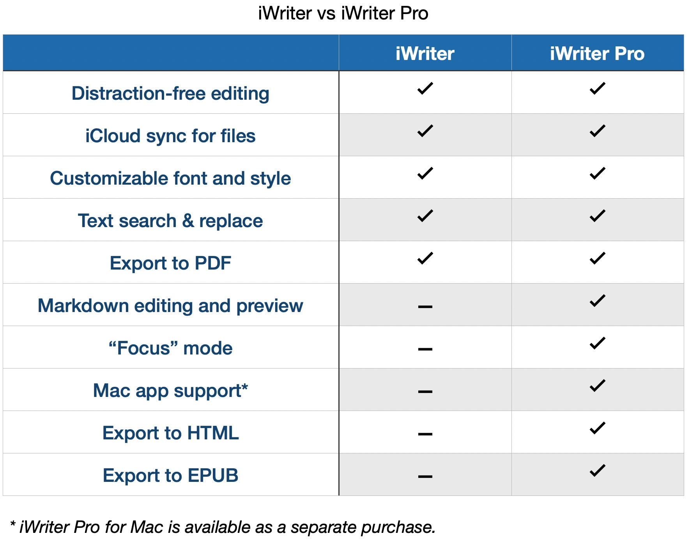

The Pro-features, such as: Markdown editing and preview, Math formulae support and many other. 
For now, x-callback-url schemes are not supported.
iWriter implements autosave. You should not care about document saving. All changes are saved automatically.
Yes. Automatic theme switching works in tandem with the system’s appearance settings. iWriter “memorizes” chosen themes for both system appearance modes (Light and Dark). For manual appearance selection please navigate to Settings > Display & Brightness.
You can do that for iCloud documents. To browse document’s versions:
iCloud > iWriter.Select and choose the document.Versions button located in the top navigation bar.Files located outside the iWriter Pro’s own folders are impossible to rename from within the editor. This issue happens due to iOS security restrictions. They cannot be lifted via Privacy settings. iWriter Pro has full access to its own folders (local and iCloud). Those folders can be located by application icon.
You can rename files in other locations from within the Document Menu. Tap and hold on a file, then choose Rename.
iWriter doesn’t have RTF support. You can use iWriter Pro for Mac to export your documents as RTF.
iWriter doesn’t have a Mac version. iWriter Pro has both iOS and Mac versions.
You can read it here.
If you have a question that is not covered here, and we’ll answer as best as we can. We take a break on the weekends, but during weekdays we aim to reply within 1–2 business days. Please note that the more detailed your description is, the quicker and better we can answer. The device model, correct app name, OS version, or screenshots will also help a lot.
You can send your request via e-mail . Please note that not all features can be added to the final product. Leaving a one star comment on the App Store while asking for a feature has never helped anyone.